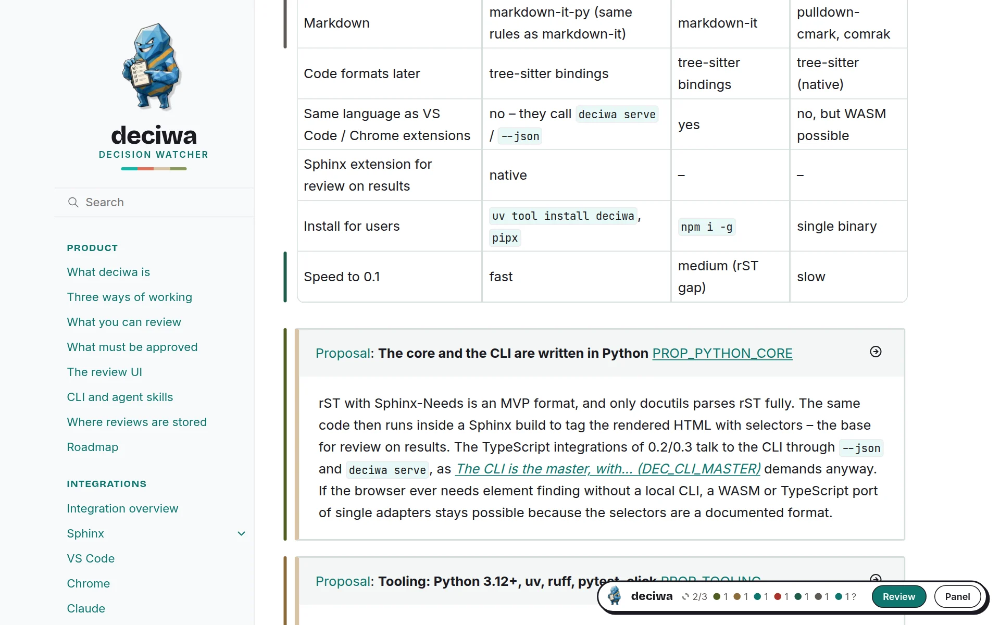

deciwa¶
decision watcher – zeig auf einen beliebigen Teil eines Dokuments, einer Website oder einer Quelldatei und sag, was du davon hältst. deciwa bindet dein Urteil genau an diese Stelle, merkt, wenn sie sich ändert, und zeigt jederzeit, was bestätigt ist, was noch offen ist und was nicht angefasst werden darf.
Warum deciwa¶
Feedback landet meist in Chats, Tickets und Kommentar-Threads, weit weg von dem Text, um den es geht. Eine Woche später weiß niemand mehr, auf welche Formulierung man sich geeinigt hat, und nach der nächsten Änderung merkt niemand, dass sich ein abgestimmter Satz still verändert hat. deciwa bringt das Feedback dorthin, wo es hingehört – an das Element selbst – und behält es im Blick.
Feedback bleibt am Element. Ein Urteil zu einem Absatz, einer Anforderung oder einem einzelnen Wort bleibt dort, auch wenn der Text verschoben wird.
Änderungen rutschen nicht durch. Ein freigegebener Text, der später bearbeitet wird, erscheint als
stale, mit alter und neuer Formulierung nebeneinander. Ändert sich ein eingefrorener Text, gibt es Alarm.Entscheidungen, die man sieht. Eine freigegebene Aussage ist die Entscheidung – keine zusätzliche Liste, die man synchron halten muss.
Die KI fragt, statt zu raten. Claude stellt seine Fragen direkt am Element; du antwortest mit Ja, Nein oder ein paar Worten.
Du weißt, wo du stehst. Pro Seite und für das ganze Projekt zeigt deciwa, wie viel von dem, was freigegeben werden muss, schon freigegeben ist.
Deine Daten bleiben deine. Reviews liegen in einem offenen Format in deinem Repository und werden mit Git versioniert.
Was du tun kannst¶
Feedback geben |
freigeben, ablehnen, freigeben & einfrieren oder löschen – eine Taste oder ein Klick, optional mit Kommentar – Drei Arbeitsweisen |
Qualität bewerten |
null bis fünf Sterne, unabhängig von jedem Urteil, um die Schwachstellen zu finden |
Der KI antworten |
Fragen von Claude erscheinen an dem Element, um das es geht |
Alles reviewen, worauf du zeigen kannst |
Anforderungen, Überschriften, Absätze, Tabellenzeilen, Bilder, ein markiertes Wort – ohne Markierungen im Quelltext – Was du reviewen kannst |
Festlegen, was freigegeben werden muss |
jede Anforderung, jede Überschrift, nur manche Seiten – Was freigegeben werden muss |
Eine Seite durcharbeiten |
das geführte Review springt von einem offenen Element zum nächsten – Die Review-Oberfläche |
Den Überblick behalten |
das Panel listet alles Feedback, offene Aufgaben und die Abdeckung pro Seite und Projekt |

Der Balken neben jedem Element zeigt seinen Zustand; der deciwa-Button unten rechts zählt sie.¶
So läuft ein Review¶
Öffne das Ergebnis – die gebaute Docs-Seite, die Website, die Datei in deinem Editor – und schalte das Review ein.
Zeigen und entscheiden – fahr mit der Maus über ein Element, drück eine Taste: freigeben, ablehnen, freigeben & einfrieren, löschen; wenn du magst, mit Sternen und Kommentar.
Die Arbeit machen lassen – ein KI-Agent oder jemand aus der Entwicklung nimmt die offenen Aufgaben, ändert den Text und meldet sie als erledigt.
Sehen, was sich geändert hat – geänderte Freigaben kommen als
stalezurück, ein geänderter eingefrorener Text als Alarm.Abdeckung verfolgen – sieh zu, wie der Anteil freigegebener Elemente wächst, bis die Seite oder das ganze Projekt durch ist.
deciwa ist ein Review- und Entscheidungs-Tool für alle, die mit Docs und Code arbeiten (deciwa ist ein Review- und ... (DEC_PURPOSE)). Es sammelt, bewertet und zeigt; es überwacht nicht, ob Entscheidungen eingehalten werden (deciwa sammelt, bewertet un... (DEC_NO_ENFORCING)). Die Änderung selbst macht die KI oder die Entwicklung – deciwa sorgt dafür, dass niemand den Überblick verliert.
Nicht deciwa |
Wer es macht |
|---|---|
Die Änderung selbst machen oder prüfen |
KI-Agent oder Entwicklung |
Testen, ob Code einer Entscheidung folgt |
quawa, normale Tests |
Fakten verwalten und Ansichten daraus erzeugen |
faktwerk |
Probier es auf diesen Seiten aus¶
Diese Docs nutzen deciwa selbst. Fahr über den runden deciwa-Button unten rechts, schalte Review ein und gib Feedback zu allem, was du siehst. Alles bleibt in deinem Browser. Eine erste Runde zum Mitmachen: Demo.
Wo deciwa läuft¶
Wo du reviewst |
Status |
|
|---|---|---|
gebaute Docs im Browser, mit Sphinx-Needs |
verfügbar |
|
der Editor und seine Docs-Vorschau |
0.3 |
|
jede Website, mit einer Zeile in der Seite |
verfügbar |
|
jede gerenderte Seite – Docs oder Website |
0.4 |
|
ein Gespräch mit der KI |
nutzbar mit der CLI; Skills in 0.1 |
|
ohne Entwicklungsumgebung |
später |
Was wann kommt: Roadmap. Wie deciwa gebaut ist: Technischer Überblick.